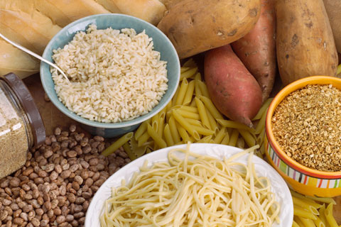
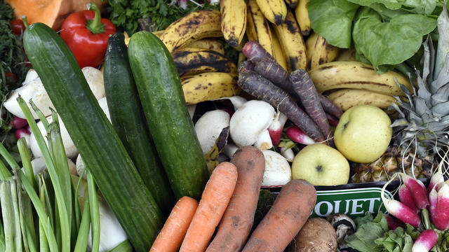

Smoothies
30Days Challenge:Can You Make A Whole Body Transformation?
How to Lose 20 Pounds of Fat in 30 Days :

It is possible to lose 20 pounds of body fat in 30 days by optimizing any of three
factors: exercise, diet, or drug/supplement regimen.
I’ve seen the elite implementation of all three in working with professional athletes. In this post, we’ll
explore what I refer to as the “slow-carb diet.”
During a span of six weeks, I cut from about 180 lbs. to 165 lbs., while adding about 10 lbs. of muscle, which
means I lost about 25 lbs. of fat.
This is the only diet besides the rather extreme Cyclical Ketogenic Diet (CKD) that has produced veins across my
abdomen, which is the last place I lose fat (damn you, Scandinavian genetics).
Here are the four simple rules I followed…

Rule #1: Avoid “white” carbohydrates:
void any carbohydrate that is — or can be — white. The following foods are thus
prohibited, except for within 1.5 hours of finishing a resistance-training workout of at least 20 minutes in
length: bread, rice, cereal, potatoes, pasta, and fried food with breading.
If you avoid eating anything white, you’ll be safe.

Rule #2: Eat the same few meals over and over again:
The most successful dieters, regardless of whether their goal is muscle gain or fat loss,
eat the same few meals over and over again. Mix and match, constructing each meal with one from each of the three
following groups:
Proteins:
- Egg whites with one whole egg for flavor
- Chicken breast or thigh
- Grass-fed organic beef
- Pork
Legumes:
- Lentils
- Black beans
- Pinto beans
Vegetables:
Eat as much as you like of the above food items. Just remember: keep it simple. Pick three or four meals and repeat them. Almost all restaurants can give you a salad or vegetables in place of french fries or potatoes.
Surprisingly, I have found Mexican food, swapping out rice for vegetables, to be one of the cuisines most conducive to the “slow carb” diet.
Most people who go on “low” carbohydrate diets complain of low energy and quit, not because such diets can’t work, but because they consume insufficient calories. A 1/2 cup of rice is 300 calories, whereas a 1/2 cup of spinach is 15 calories! Vegetables are not calorically dense, so it is critical that you add legumes for caloric load.
Some athletes eat 6–8x per day to break up caloric load and avoid fat gain. I think this is ridiculously inconvenient. I eat 4x per day:
- 10am — breakfast
- 1pm — lunch
- 5pm — smaller second lunch
- 7:30–9pm — sports training
- 10pm — dinner
- 12am — glass of wine and Discovery Channel before bed
Here are some of my meals that recur again and again:
Scrambled Eggology pourable egg whites with one whole egg, black beans, and microwaved mixed vegetables
Grass-fed organic beef, pinto beans, mixed vegetables, and extra guacamole (Mexican restaurant)
Grass-fed organic beef (from Trader Joe’s), lentils, and mixed vegetables
.1200.jpg)
Rule #3: Don’t drink calories:
Drink massive quantities of water and as much unsweetened iced tea, tea, diet sodas, coffee (without white cream), or other no-calorie/low-calorie beverages as you like. Do not drink milk, normal soft drinks, or fruit juice.
I’m a wine fanatic and have at least one glass of wine each evening, which I believe actually aids sports recovery and fat-loss. Recent research into resveratrol supports this.
Rule #4: Take one day off per week:
I recommend Saturdays as your “Dieters Gone Wild” day. I am allowed to eat whatever I want on Saturdays, and I go out of my way to eat ice cream, Snickers, Take 5, and all of my other vices in excess.
I make myself a little sick and don’t want to look at any of it for the rest of the week. Paradoxically, dramatically spiking caloric intake in this way once per week increases fat loss by ensuring that your metabolic rate (thyroid function, etc.) doesn’t downregulate from extended caloric restriction.
That’s right: eating pure crap can help you lose fat. Welcome to Utopia.
Subscribe To This Challenge To Get A Detailed Program For Each Day!
<< Previous Next >>